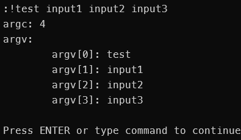

[Note] Writing a simple Program in C - LiveOverflow
看了這部影片 Writing a simple Program in C - YouTube 做的筆記
PATH
env | grep "PATH" # or
echo $PATH #this one
# add to PATH(for one time)
export PATH=$PATH:directoryvim 基礎
:syntax on #上色
:set number #標號C 語言
#include <stdio.h>
int main(int argc, char *argv[]){
if(argc==2){
printf("Knock, Knock, %s\n", argv[1]);
} else {
fprintf(stderr, "Usage: %s <name>\n", argv[0]);
return 1;
}
}解析：
-
argc: 參數數量(從檔案名稱算起)
-
argv: 參數矩陣(包含檔案名稱)
範例：#include <stdio.h> int main(int argc, char *argv[]){ printf("argc: %d\n",argc); printf("argv:\n") for(int i=0;i<argc;i++){ printf("\targv[%d]: %s\n", i, argv[i]); } return 0; }輸出：

本部落格所有文章除特別聲明外，均採用CC BY-NC-SA 4.0 授權協議。轉載請註明來源 R3X's Blog！
評論


![[演算法] 線性篩](/2026/06/11/%E6%BC%94%E7%AE%97%E6%B3%95-%E7%B7%9A%E6%80%A7%E7%AF%A9/ascii_art_2.png)